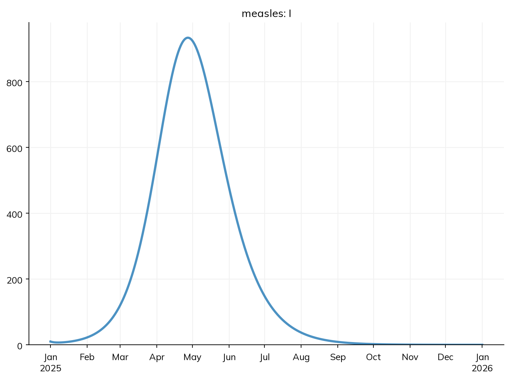
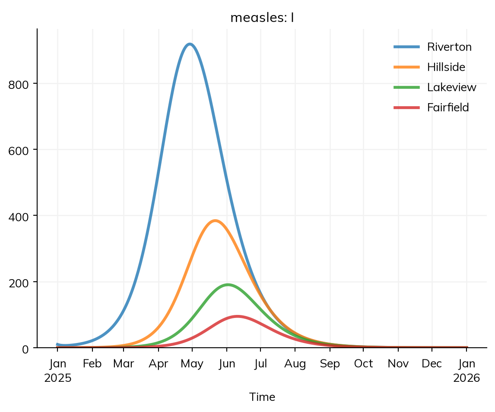
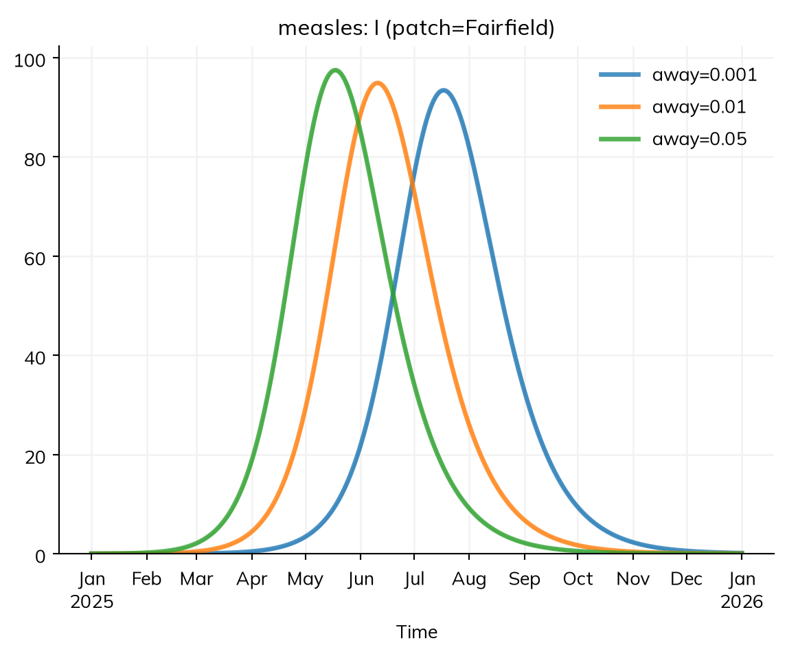
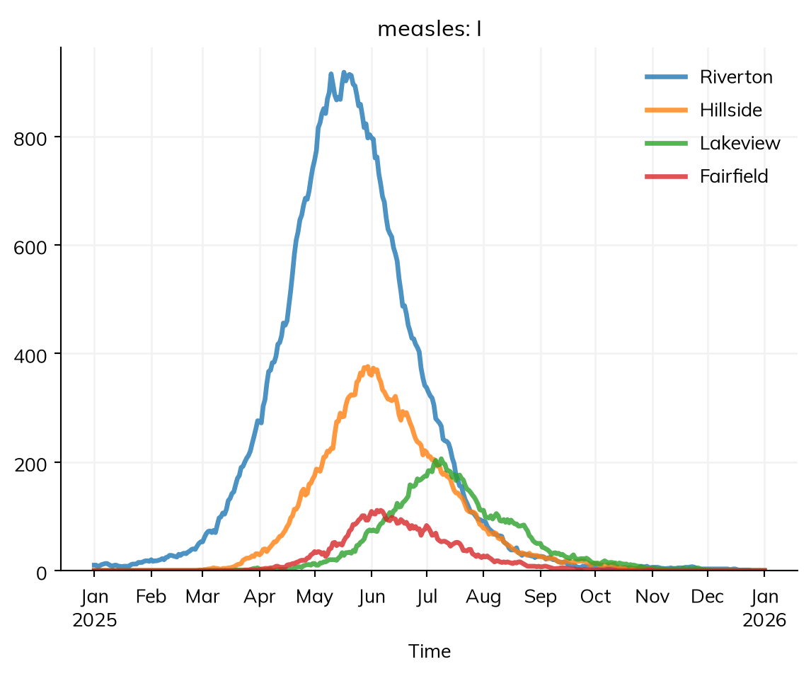

Can an outbreak in one town seed another? Measles brought into one town doesn’t stay there. People travel to the next town to work, to shop, or to visit family, and some of them carry it with them. Each town then has its own outbreak, with its own timing, and the towns’ outbreaks are linked by the people who move between them. This is a metapopulation model: several populations, each mixing mostly within itself, coupled by movement.
This tutorial takes the measles model from one town to four. By the end, you will be able to:
give a model several places, with their populations and positions;
say how much people move between them, with a gravity model or a matrix;
read the results for each place, and see how an outbreak spreads from one to the next;
see how much the answer depends on the amount of movement, and on chance.
The model so far
This is the model from T5 – Interventions and scenarios: measles in a town of 100,000 people in three age groups, who mix according to a contact matrix, most of them already immune. Since this tutorial makes the disease several times, with different places and movement, the parts that stay the same are made once, and make_measles() puts them together, with the number of people infectious at the start given:
import starsim as ssS, E, I, R = ss.states('S E I R')beta = ss.par(0.14, bounds=[0.05, 0.5]) # The rate of infection per contact with an infectious person, per dayinfection = S >> E @ beta*Iprogression = E >> I @ ss.days(10) # Latent for 10 days on averagerecovery = I >> R @ ss.days(8) # Infectious for 8 days on averagecontacts = ss.contacts(ages=[0, 15, 65], matrix=[[10, 6, 1], [3, 8, 1], [3, 6, 3]]) # Contacts a day, between age groupsdef make_measles(init_n=10):""" The measles model, by age, with the number infectious at the start given """ measles = ss.Disease(infection, progression, recovery, init =dict(R=ss.by(age=[0.8, 0.92, 0.98])), # The share immune in each age group init_n =dict(I=init_n), name ='measles', ) measles.stratify(age={0: 0.3, 15: 0.6, 65: 0.1}) # Ages 0-14, 15-64, and 65+return measlessim = ss.Sim(make_measles(), networks=contacts, total_pop=100_000, start='2025-01-01', stop='2026-01-01')sim.run()sim.plot('measles.I')
Sim: measles, 100,000 people, as an ODE, 2025-01-01 to 2026-01-01
measles: R0 = 15.8 (R = 2.46 at the start, with 11% susceptible), with 10 infectious at the start
Note: people do not age between the age groups, since nobody is born or dies; pass use_aging=True to age them
Done in 0.0081 s; measles: 8,795 infections; at most 934 infectious, on 2025-04-27

Several towns
The town, Riverton, has three smaller neighbors. A geography (ss.geo.geography()) gives the places: their names, their populations, and where they are (here, positions on a map in kilometers, from which Starsim works out the distance between each pair):
towns = ss.geo.geography( names = ['Riverton', 'Hillside', 'Lakeview', 'Fairfield'], pop = [100_000, 40_000, 20_000, 10_000], x = [0, 20, 35, 60], # Kilometers east of Riverton y = [0, 10, -15, 5], # Kilometers north of Riverton)towns.distances.round()
Places are a stratification, as age groups are: stratify(patch=towns) splits each state by town (a “patch” is a place in a metapopulation model), so that each town has its own susceptible, exposed, infectious, and recovered people, and the contact matrix applies within each town. The populations of the towns give the population of the model, so total_pop isn’t needed. The outbreak starts in Riverton only: ss.by(patch=[10, 0, 0, 0]) gives the number infectious at the start in each town.
Without movement, each town is a separate model:
alone = make_measles(init_n=ss.by(patch=[10, 0, 0, 0])) # 10 people infectious in Riverton, none elsewherealone.stratify(patch=towns)settings =dict(networks=contacts, start='2025-01-01', stop='2026-01-01')sim = ss.Sim(alone, **settings)sim.run()sim.results.measles.infection.by('patch').summarize().round()
Sim: measles, 170,000 people, as an ODE, 2025-01-01 to 2026-01-01
measles: R0 = 15.8 (R = 2.46 at the start, with 11% susceptible), with 10 infectious at the start
Note: people do not age between the age groups, since nobody is born or dies; pass use_aging=True to age them
Done in 0.003 s; measles: 8,795 infections; at most 934 infectious, on 2025-04-27
Riverton has its outbreak, the same as before, and measles never leaves it.
Movement between towns
How much people move between places, and where they go, is often not known in detail. A gravity model is the usual first guess: the movement from one place to another grows with the population of the place people go to (a larger town draws more visitors) and falls with the square of the distance between them. The amount of movement is given separately, as the share of their time that people spend in other towns, away, here 1% (about a quarter of an hour a day, or a day out of every three months):
away = ss.par(0.01, bounds=[0.001, 0.1]) # People spend 1% of their time in other townsmeasles = make_measles(init_n=ss.by(patch=[10, 0, 0, 0]))measles.stratify(patch=towns, mobility=ss.geo.gravity(away=away))sim = ss.Sim(measles, **settings)sim.run()sim.results.measles.I.by('patch').plot()
Sim: measles, 170,000 people, as an ODE, 2025-01-01 to 2026-01-01
measles: R0 = 15.8 (R = 2.46 at the start, with 11% susceptible), with 10 infectious at the start
Note: people do not age between the age groups, since nobody is born or dies; pass use_aging=True to age them
Done in 0.0033 s; measles: 14,957 infections; at most 1,370 infectious, on 2025-05-11

The movement here is commuting: the people of each town keep their home town, but spend a share of their time in the others, where they can be infected by the people there, and infect them. Commuting changes who is exposed where without changing anyone’s home. (Migration, in which people move home, is kind='migrate', with rates of moving rather than shares of time.)
With movement, the outbreak peaks first in Riverton, at the end of April, and then in each other town in turn: in Hillside, the nearest, in late May, then in Lakeview, and last in Fairfield, the smallest and farthest, in mid-June, six weeks after Riverton. Since the towns have the same immunity, each outbreak infects about the same share of its town, about 9%. select() picks one place’s result, as it does an age group’s:
When the movement between places is known, from a survey or from mobile phone data, it can be given as a matrix instead, with ss.geo.Mobility(matrix=..., kind='commute'): row i, column j is the share of their time that the people of place i spend in place j. Geography covers this, the radiation model, and coupling places through the force of infection rather than through movement.
How much movement matters
The share of time away is the least certain number in this model. To see how much it matters, run the model with several values of it. ss.parallel() with pars= runs a sim once for each value given (a parameter sweep), labeling each run with its value:
MultiSim: 3 runs of 3 scenarios (away=0.001, away=0.01, away=0.05)
Done in 0.036 s

With 5 times as much movement, Fairfield’s outbreak comes about three weeks earlier; with 10 times less, about five weeks later. The size of the outbreak doesn’t change: in this model, measles always reaches Fairfield in the end.
That last part isn’t realistic. In an ODE, a small fraction of an infectious person can travel to Fairfield on the first day and start an outbreak there; in reality, measles reaches Fairfield only if a whole infectious person does, and then only if the chains of infection they start don’t die out by chance. To see this, run the model as a stochastic model (as in T5), with little movement, many times:
fairfield = msim.results.measles.infection.select(patch='Fairfield').summarize() # The infections in Fairfield in each runprint('Runs with an outbreak in Fairfield:', sum(fairfield >100), 'of', len(fairfield))
Runs with an outbreak in Fairfield: 27 of 30
In about one run in ten, measles never takes off in Fairfield: either no infectious person goes there while the other towns’ outbreaks last, or the few infections they cause die out. In the others, the outbreak comes at very different times, from May to the end of the year, when some are still going. For a small place that is weakly linked to others, whether an outbreak arrives at all is a matter of chance, and a model that ignores this overstates how surely it spreads.
As agents
The same model runs as agents, each with a home town, with n_agents=. Here there is one agent for each of the 170,000 people:
Sim: measles, as 170,000 agents, 2025-01-01 to 2026-01-01
Note: people do not age between the age groups, since nobody is born or dies; pass use_aging=True to age them
Note: consider a shorter step (e.g. dt=ss.days(0.25)): each step is 1 day, and infection transmits at up to 0.14 per day (per infectious contact), 13% in a step (and I is fast too). Taking whole steps, agents may differ from the ODE by an amount of that order; sim.check_dt() shows how much it matters
Done in 3.1 s; measles: 14,959 infections; at most 1,371 infectious, on 2025-05-26

Each agent has a home town, and is exposed in the other towns for the share of their time spent there, as in the compartmental model. The outbreaks spread from town to town as in the compartmental model, a little later (the run notes that agents taking whole days can lag the ODE), and with the variation of a stochastic model: in this run, Fairfield’s outbreak happens to come before Lakeview’s. With fewer agents than people, each agent stands for several people, and the 10 people infectious at the start can be as few as one agent, so the outbreak can die out at the start by chance alone.
Real places
Places can also be a country’s regions, by name: ss.geo.geography('Kenya', level=1) gives Kenya’s 47 counties, with their populations, positions, and which share a border. Movement can come from a gravity model, from the radiation model (ss.geo.radiation(), which needs no parameters), from a matrix of movement you supply, or from a register of moves on given dates (e.g. of livestock between farms), and it can be commuting, as here, or migration. See Geography and Population data.
Exercises
Lakeview’s children are less often vaccinated: only 65% of them are immune. Give the share immune by age and town (ss.by() with both, multiplied together: e.g. ss.by(age=[0.8, 0.92, 0.98], patch=[1, 1, 0.8125, 1])), and run the model. How does Lakeview’s outbreak compare with the others’?
A campaign that vaccinates 80% of children under 15 in Riverton only, on 1 March (where=(measles.age < 15) & (measles.patch == 'Riverton')): how many infections does it prevent in Riverton, and how many in the other towns? Why so few in the other towns, in this model?
Replace the gravity model with the radiation model (ss.geo.radiation(away=away)). Which towns’ outbreaks come earlier or later, and why?